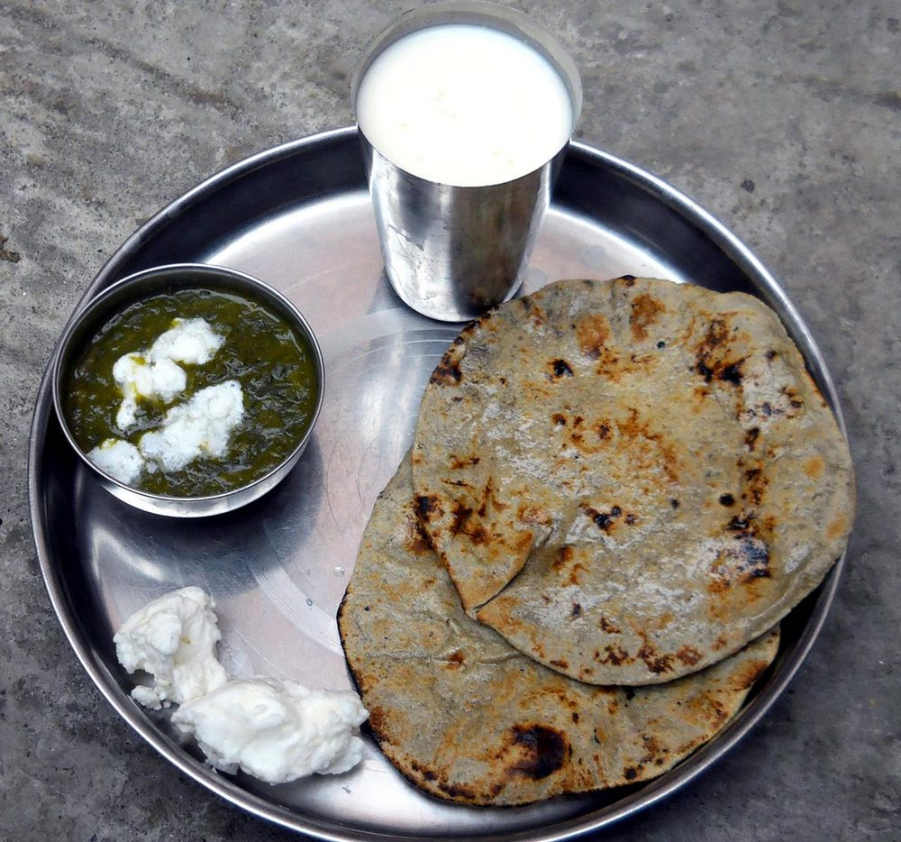

Contains: milk
Ingredients
Quantities for 4.
- 300g Bajra Flourbuy it fresh. Bajra flour goes bitter within a few weeks
- about 220ml, very hot Water
- 1/2 tsp Salt
- 4 tsp, to serve Gheea lump melted on each hot rotioptional
Cookware
tawa, stovetop
Checked against the ingredient list for ten allergens: milk, egg, fish, crustaceans, tree nuts, peanuts, sesame, mustard, soy and gluten. Brands vary, so read the label on anything new to you.
Before you start
- Bajra has no gluten, so the dough has nothing to hold it together. Hot water is what makes it workable. Boil the kettle before you start.
- Make the dough in two or three batches as you cook. Bajra dough stiffens and cracks if it sits around.
- Have the tawa heating while you knead; these rotis are patted and cooked one at a time.
Method
- Mix the flour and salt, then pour in the hot water a little at a time, stirring with a spoon until too hot to handle comfortably.Hot water, not warm. This is the difference between a dough and a pile of crumbs.
- Knead 4-5 minutes with the heel of your hand while it is still warm, until smooth and pliable with no cracks.
- Divide into 6 balls and keep them covered with a damp cloth.
- Flatten one ball between your palms, then pat it out on a greased sheet of plastic or a damp cloth, rotating as you go, into a 15cm disc about 5mm thick.Thicker than a chapati. Thin bajra rotis break every time.
- Lift it onto a medium-hot tawa and cook 2 minutes until the underside is speckled and dry.
- Flip and cook the second side 2 minutes, pressing the edges gently with a cloth so it cooks evenly.
- Lift the roti with tongs and hold it directly over the flame for 15-20 seconds a side until it puffs and chars in patches.Keep it moving over the flame. Bajra scorches faster than wheat.
- Smear with ghee and serve immediately with ker sangri, gatte ki sabzi or plain garlic chutney.
Storage
Best eaten within minutes of cooking. Leftovers keep a day wrapped in a cloth; crumble cold rotis into hot milk with jaggery, which is how they are usually finished off in Rajasthan.
Nutrition Good estimate
Low protein: 8 g a serving, 10% of the calories
| Per serving136 g | Per 100 g | |
|---|---|---|
| Calories | 330 kcal | 244 kcal |
| Protein | 8.1 g | 6 g |
| Carbohydrate | 56.3 g | 42 g |
| of which sugars | 1.2 g | 1 g |
| Fibre | 2.6 g | 2 g |
| Fat | 8.2 g | 6 g |
| of which saturated | 3.5 g | 3 g |
| of which unsaturated | 4.2 g | 3 g |
Nearest database match used for bajra flour. Estimated from raw ingredients using USDA FoodData Central.
More like this: Vegetarian Indian recipes · Gluten-free Indian recipes · No onion no garlic recipes · Rajasthani recipes
Times, yields, allergens and nutrition are guidance. Use your own judgement on doneness and on storing. More in About.